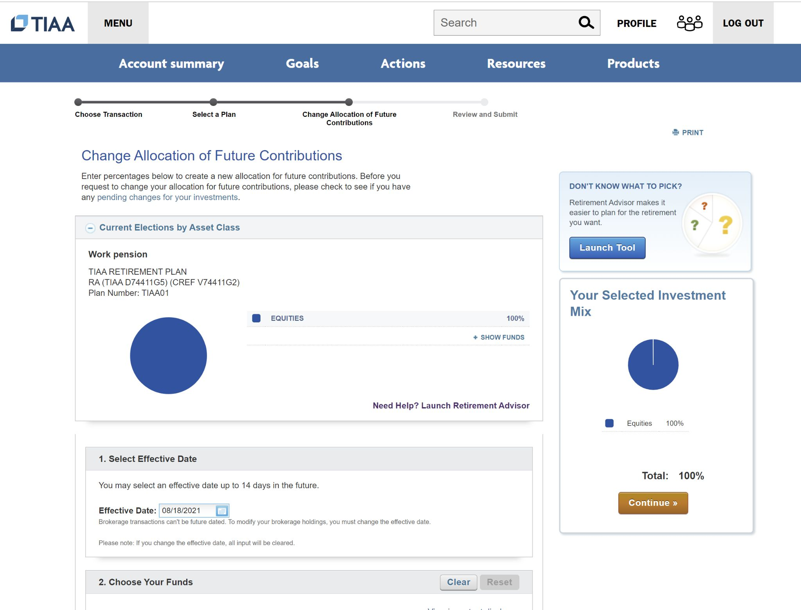
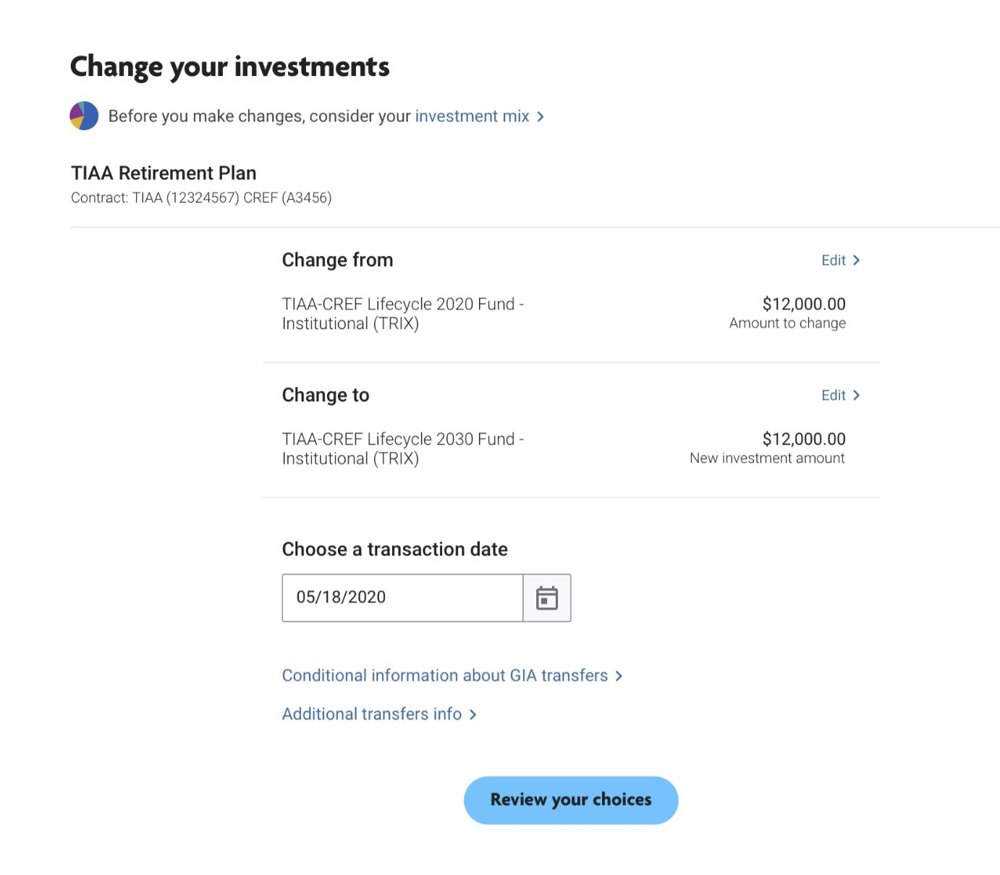

End-to-end flow: Complexity on demand
Applying my favorite principle to TIAA's complex “Change Investments” flow for millions of customers.


The challenge
TIAA's “Change Retirement Plan Investments” flow was outdated and in need of a modern approach. When it came to me, each step showed content that covered all potential scenarios—even when it wasn't useful to most people. Plan details, asset classes, conditional rules and legal caveats were all there on impression. “Choose a date” even had 45 words.
The end-to-end flow made maximum complexity its default setting. I saw a chance to flip that, and make the simple path the first thing people see.
What I enjoy the most is his customer perspective. Even with all the stakeholders he has to manage, he never hesitates to advocate for the customer to ensure their understanding of the content."Product Director, TIAA
My approach
I interviewed product stakeholders and owners to map the flow and prioritize the most important actions people needed to complete, generating a report to gain consensus.
I applied progressive disclosure to each step, revealing details and caveats only when relevant, and making them available behind clearly labeled links.
I translated dense jargon into simple, plain language to cut the clutter.
Impact
Key insight
The most complex products create the biggest opportunities. The instinct is to show everything at once to reduce risk and ensure nothing is missed. But completeness does not equal clarity. A good content design team can decide what really needs to come first, and help people access additional information only when it's helpful.

Get in touch
I'm looking for my next adventure leading content and design into the AI era.
Email: ryanlooney1@gmail.com | LinkedIn